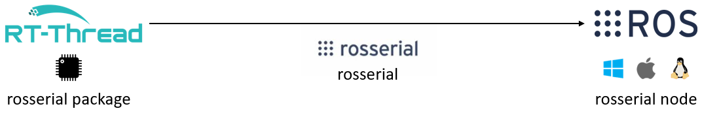
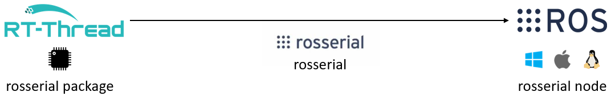
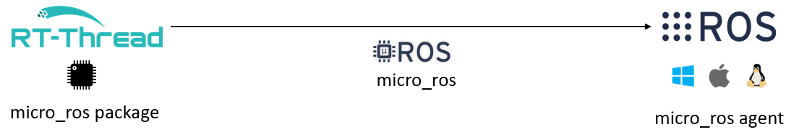
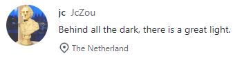

Robot Operating System (ROS) on RT-Thread

Han Wu @wuhanstudio
Ph.D. Student at the University of Exeter, in the U.K.
Research: Is Deep Learning secure for Robots?
Why do we need ROS?
ROS is not an operating system, it is a set of software libraries and tools.
Adversarial ROS Detection

ROS decouples software from hardware.
The same code works for both simulated robots and real robots.
ROS for Autonomous Driving
Carla Simulator - ROS BridgeWhy do we need RT-Thread?
RT-Thread provides support for real-time applications. ROS runs on Linux, MacOS, Windows.


| rosserial | micro_ros |
|---|---|
| ROS1 | ROS2 |
| C++ | C/C++ |
| serial & TCP | serial & UDP |
| 8bit - 32bit MCUs | 32bit MCUs |
| amd64 arm64 armhf | amd64 arm64 |
ROS1 on RT-Thread (rosserial)
Choose the distribution (ROS1)
| ROS1 | Ubuntu | Debian |
|---|---|---|
| Noetic | Ubuntu 20.04 (Focal) | Debian 10 (Buster) |
| Melodic | Ubuntu 18.04 (Bionic) | Debian 9 (Stretch) |
| Kinetic | Ubuntu 16.04 (Xenial) | Debian 8 (Jessie) |
Install ROS1 (Noetic)
$ sudo sh -c 'echo "deb http://packages.ros.org/ros/ubuntu $(lsb_release -sc) main" > /etc/apt/sources.list.d/ros-latest.list'
$ sudo apt install curl # if you haven't already installed curl
$ curl -s https://raw.githubusercontent.com/ros/rosdistro/master/ros.asc | sudo apt-key add -
$ sudo apt update
$ sudo apt install ros-noetic-ros-base
$ echo "source /opt/ros/noetic/setup.bash" >> ~/.bashrc
$ source ~/.bashrc
$ sudo apt install python3-rosdep
$ sudo rosdep init
$ rosdep update
Install rosserial
$ sudo apt install ros-noetic-rosserial-arduino
RT-Thread
msh > rosserial_hello_world_serial_example
Echo the topic
$ rostopic echo /chatter
 

rosserial port on RT-Thread (RTTHardware.h)
#ifndef ROSSERIAL_UART_NAME
#define ROSSERIAL_UART_NAME "uart2"
#endif
class RTTHardware {
public:
RTTHardware();
void setBaud(long baud);
int getBaud();
void init();
int read();
void write(uint8_t* data, int length);
unsigned long time();
};
rosserial port on RT-Thread (RTTTcpHardware.h)
#ifndef ROSSERIAL_TCP_RECV_TIMEOUT
#define ROSSERIAL_TCP_RECV_TIMEOUT 200000
#endif
#ifndef ROSSERIAL_TCP_SEND_TIMEOUT
#define ROSSERIAL_TCP_SEND_TIMEOUT 200000
#endif
class RTTTcpHardware {
public:
RTTTcpHardware();
void setConnection(const char* url, int port = 11411);
void init();
int read();
void write(const uint8_t* data, int length);
unsigned long time();
};
ROS2 on RT-Thread (micro_ros)
Choose the distribution (ROS2)
| ROS2 | Ubuntu | Debian | RHEL |
|---|---|---|---|
| Galactic | Ubuntu 20.04 (Focal) | Debian 10 (Buster) | RHEL 8 64-bit |
| Foxy | Ubuntu 20.04 (Focal) | Debian 10 (Buster) | - |
| Dashing | Ubuntu 18.04 (Bionic) | Debian 9 (Stretch) | - |
Install ROS2 (Galactic)
$ sudo apt install software-properties-common
$ sudo add-apt-repository universe
$ sudo apt update && sudo apt install curl gnupg lsb-release
$ sudo curl -sSL https://raw.githubusercontent.com/ros/rosdistro/master/ros.key -o /usr/share/keyrings/ros-archive-keyring.gpg
$ echo "deb [arch=$(dpkg --print-architecture) signed-by=/usr/share/keyrings/ros-archive-keyring.gpg] http://packages.ros.org/ros2/ubuntu $(lsb_release -cs) main" | sudo tee /etc/apt/sources.list.d/ros2.list > /dev/null
$ sudo apt update
$ sudo apt install ros-galactic-ros-base
$ echo "source /opt/ros/galactic/setup.bash" >> ~/.bashrc
$ source ~/.bashrc
$ sudo apt install python3-rosdep
$ sudo rosdep init
$ rosdep update
Ubuntu
$ docker run -it -p 9999:9999/udp --privileged microros/micro-ros-agent:galactic udp4 -p 9999
RT-Thread
msh > microros_pub_int32
Echo the topic
$ docker exec -it YOUR_DOCKER_CONTAINER_NAME /bin/bash
$ ros2 topic echo /micro_ros_rtt_node_publisher

micro_ros port on RT-Thread (micro_ros_rtt.h)
#if defined MICRO_ROS_USE_SERIAL
bool rtt_transport_open(struct uxrCustomTransport * transport);
bool rtt_transport_close(struct uxrCustomTransport * transport);
size_t rtt_transport_write(struct uxrCustomTransport* transport, const uint8_t * buf, size_t len, uint8_t * err);
size_t rtt_transport_read(struct uxrCustomTransport* transport, uint8_t* buf, size_t len, int timeout, uint8_t* err);
int clock_gettime(clockid_t unused, struct timespec *tp);
#endif // MICRO_ROS_USE_SERIAL
#if defined MICRO_ROS_USE_UDP
bool rtt_udp_transport_open(struct uxrCustomTransport * transport);
bool rtt_udp_transport_close(struct uxrCustomTransport * transport);
size_t rtt_udp_transport_write(struct uxrCustomTransport* transport, const uint8_t * buf, size_t len, uint8_t * err);
size_t rtt_udp_transport_read(struct uxrCustomTransport* transport, uint8_t* buf, size_t len, int timeout, uint8_t* err);
int clock_gettime(clockid_t unused, struct timespec *tp);
#endif // MICRO_ROS_USE_UDP
Future Plan
Higher frequency (TCP & UDP)
Upstream the port
